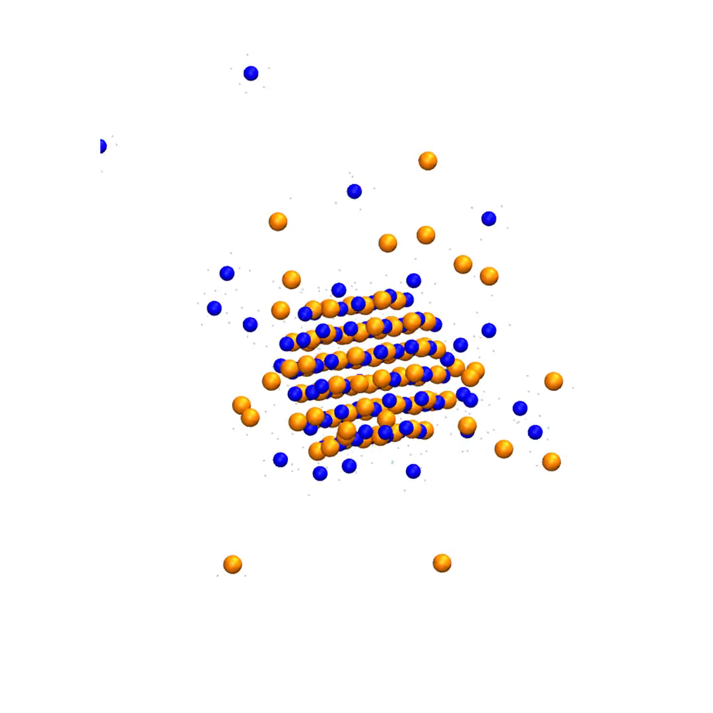

Salt dissolution
An ordered NaCl cluster meets water. Surface ions detach from the lattice and become hydrated.
Computational chemistry in motion
I use molecular simulations to study chemistry through motion: crystals eroding, molecules evaporating, interfaces forming, and interactions taking shape.

Project 002
A real simulation of a salt cluster eroding as ions leave the lattice and move into water.
An ordered NaCl cluster meets water. Surface ions detach from the lattice and become hydrated.
Water molecules leave a heated slab and move into vapor space.
Selected analysis and workflow code behind the simulations and figures.